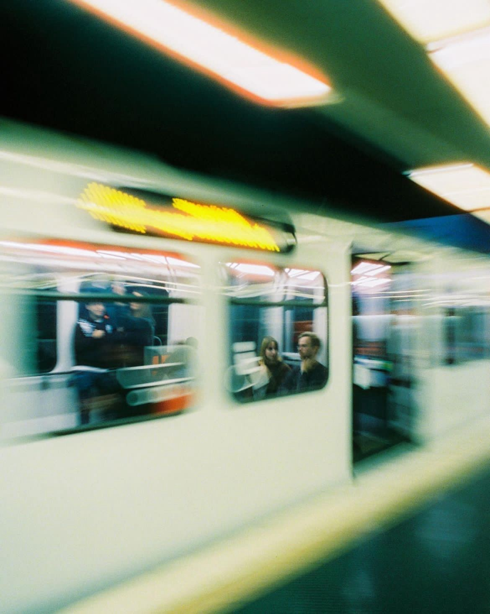

Moverse por la ciudad implica mucho más que trasladarse de un punto a otro: es tiempo de vida que se gasta en trayectos, esperas e incertidumbre. Para muchas personas trabajadoras, especialmente en mercados y oficios, el viaje diario puede significar varias horas perdidas que podrían destinarse al descanso, la familia o el autocuidado.
Ese tiempo invertido en movilidad no solo afecta la rutina, también impacta en la salud física y emocional. Los largos recorridos implican madrugar, pasar menos horas de sueño, enfrentar condiciones de inseguridad y exponerse a cambios de clima constantes. Al final, la movilidad no es un aspecto aislado, sino una experiencia corporal que desgasta y condiciona la calidad de vida.
Costo
El Metro de la Ciudad de México es uno de los sistemas de transporte más accesibles del mundo, con una tarifa baja en comparación con otros medios de movilidad. Sin embargo, para quienes lo utilizan todos los días, el gasto se acumula y se convierte en una parte importante del presupuesto familiar. A esto se suman los costos indirectos: trasbordos a otros transportes, alimentos comprados durante el trayecto o el simple desgaste físico y emocional de los viajes diarios.
El bajo precio del boleto refleja la importancia del Metro como transporte público masivo y subsidiado, pero también pone en evidencia desigualdades. Mientras algunas personas pueden costear alternativas más cómodas o rápidas, la mayoría depende del Metro como su única opción viable, sacrificando tiempo y comodidad por economía. Así, el costo de la movilidad no solo se mide en pesos, sino también en esfuerzo y calidad de vida.
Distancia
La magnitud de la Ciudad de México hace que las distancias se conviertan en un reto cotidiano. No es raro que una persona deba recorrer decenas de kilómetros al día para llegar a su trabajo, escuela o mercado. Lo que en un mapa puede parecer un tramo corto, en la práctica se traduce en trasbordos, tráfico y tiempos prolongados que multiplican la sensación de lejanía.
Estas distancias no solo separan físicamente a las personas de sus destinos, también generan barreras sociales y económicas. Vivir lejos del centro o de los polos de empleo implica invertir más horas y recursos en movilidad, condicionando las oportunidades de quienes habitan en la periferia. En este sentido, la distancia no se mide únicamente en kilómetros, sino en desigualdad y desgaste diario.
Horario

Los horarios laborales marcan la manera en que millones de personas se mueven por la ciudad. Las horas pico, donde el transporte público se satura y las vialidades se congestionan, están directamente ligadas a las entradas y salidas del trabajo. Para quienes deben trasladarse desde muy temprano, esto significa jornadas más largas, levantarse de madrugada para llegar a tiempo y regresar a casa ya entrada la noche.
Esta rutina no solo limita el descanso, también afecta la vida familiar y social. El tiempo que debería destinarse al ocio, al cuidado personal o a convivir con los seres queridos se consume en traslados interminables. De esta forma, los horarios laborales no terminan en la oficina o el mercado: se extienden hacia el transporte y se convierten en parte del desgaste cotidiano del cuerpo.